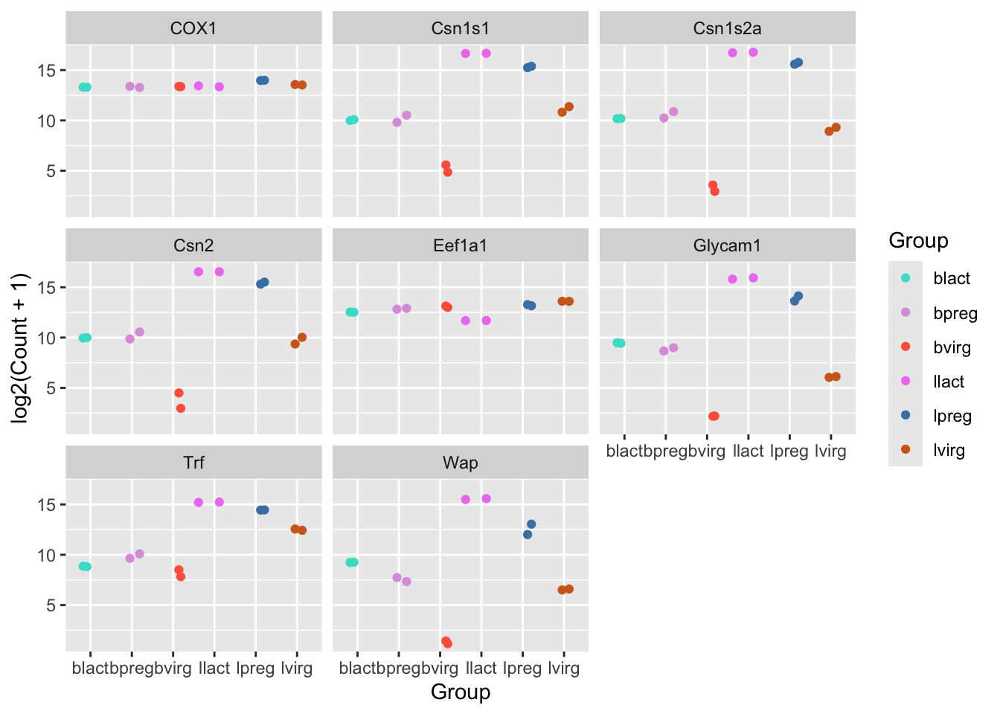
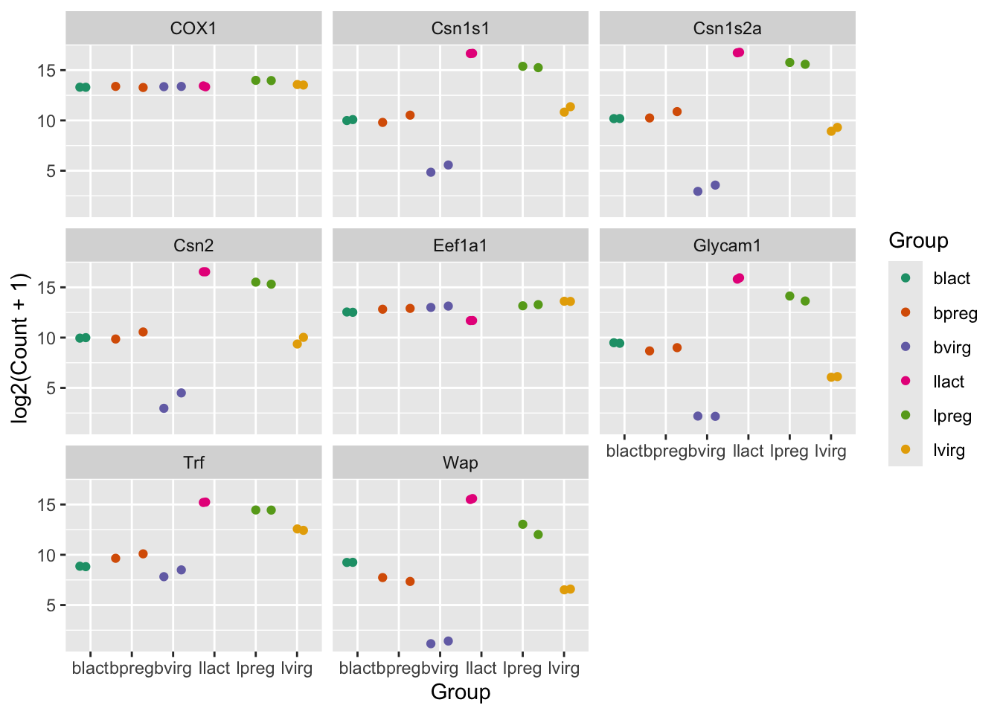
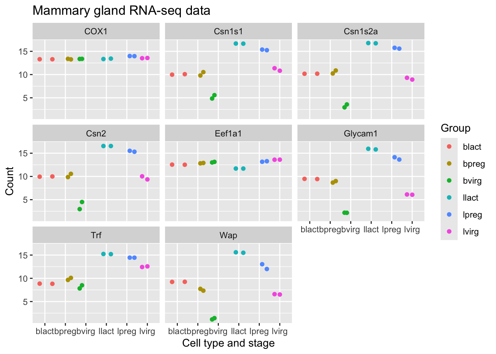
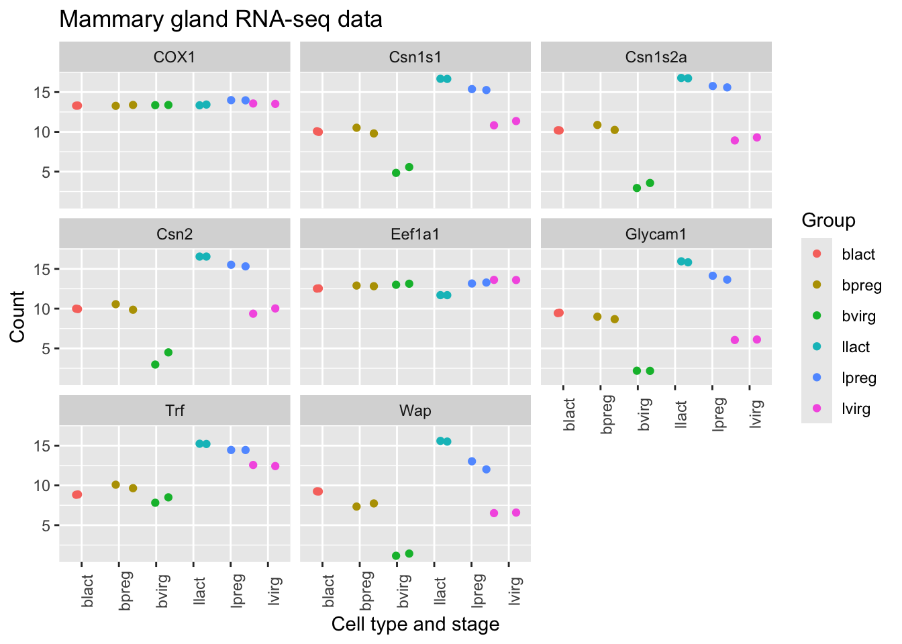
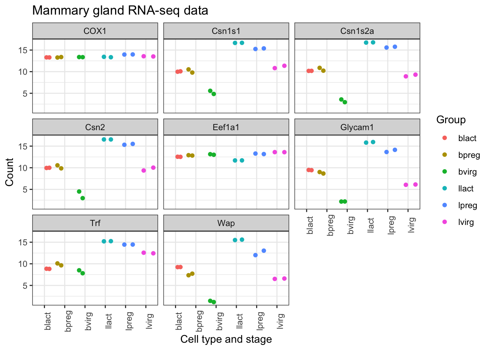
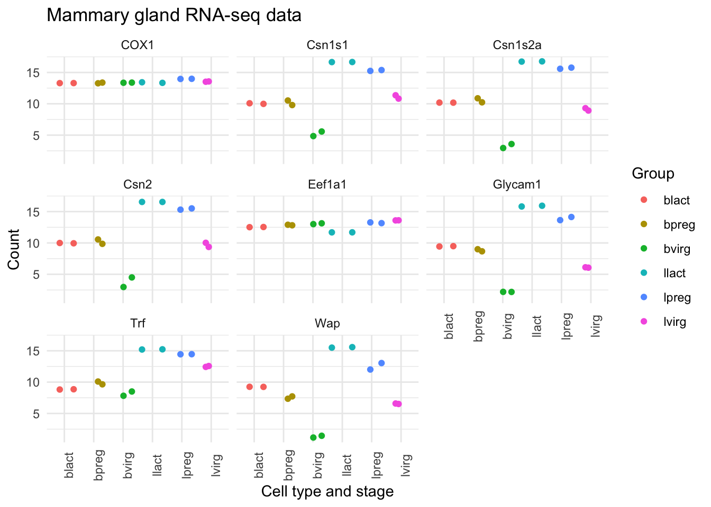
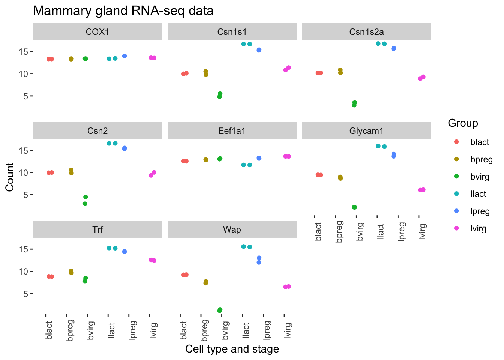
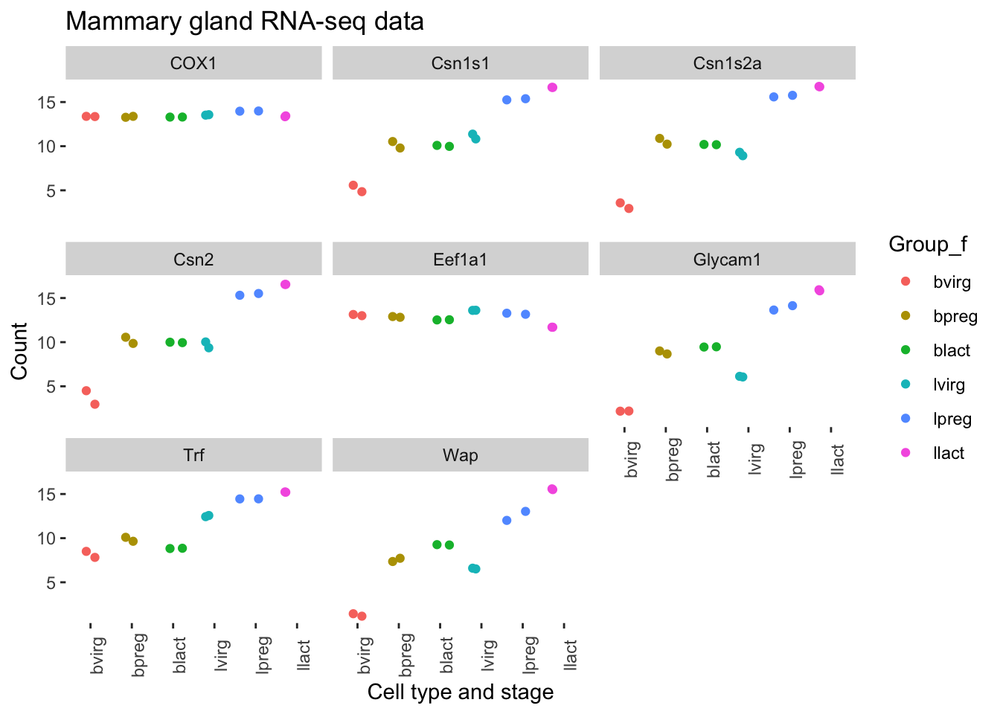

mycolours <- c("turquoise", "plum", "tomato", "violet", "steelblue", "chocolate")Customising the plot
Specifying colours
We might want to change the colours. To see what colour names are available you can type colours(). There is also an R colours cheatsheet that shows what the colours look like.
Then we then add these colours to the plot using a + and scale_colour_manual(values = mycolours).
ggplot(data = mygenes_counts,
mapping = aes(x = Group, y = log2(Count + 1), colour = Group)) +
geom_jitter() +
facet_wrap(~ gene_symbol) +
scale_colour_manual(values = mycolours)
There are built-in colour palettes that can be handy to use, where the sets of colours are predefined. scale_colour_brewer() is a popular one (there is also scale_fill_brewer()). You can take a look at the help for scale_colour_brewer() to see what palettes are available. The R colours cheatsheet also shows what the colours of the palettes look like. There’s one called “Dark2”, let’s have a look at that.
ggplot(data = mygenes_counts,
mapping = aes(x = Group, y = log2(Count + 1), colour = Group)) +
geom_jitter() +
facet_wrap(~ gene_symbol) +
scale_colour_brewer(palette = "Dark2")
Axis labels and Title
We can change the axis labels and add a title with labs(). To change the x axis label we use labs(x = "New name"). To change the y axis label we use labs(y = "New name") or we can change them all at the same time.
ggplot(data = mygenes_counts,
mapping = aes(x = Group, y = log2(Count + 1), colour = Group)) +
geom_jitter() +
facet_wrap(~ gene_symbol) +
labs(x = "Cell type and stage", y = "Count", title = "Mammary gland RNA-seq data")
Themes
We can adjust the text on the x axis (the group labels) by turning them 90 degrees so we can read the labels better. To do this we modify the ggplot theme. Themes are the non-data parts of the plot.
ggplot(data = mygenes_counts,
mapping = aes(x = Group, y = log2(Count + 1), colour = Group)) +
geom_jitter() +
facet_wrap(~ gene_symbol) +
labs(x = "Cell type and stage", y = "Count", title = "Mammary gland RNA-seq data") +
theme(axis.text.x = element_text(angle = 90))
We can remove the grey background and grid lines.
There are also a lot of built-in themes. Let’s have a look at a couple of the more widely used themes. The default ggplot theme is theme_grey().
ggplot(data = mygenes_counts,
mapping = aes(x = Group, y = log2(Count + 1), colour = Group)) +
geom_jitter() +
facet_wrap(~ gene_symbol) +
labs(x = "Cell type and stage", y = "Count", title = "Mammary gland RNA-seq data") +
theme_bw() +
theme(axis.text.x = element_text(angle = 90))
ggplot(data = mygenes_counts,
mapping = aes(x = Group, y = log2(Count + 1), colour = Group)) +
geom_jitter() +
facet_wrap(~ gene_symbol) +
labs(x = "Cell type and stage", y = "Count", title = "Mammary gland RNA-seq data") +
theme_minimal() +
theme(axis.text.x = element_text(angle = 90))
There are many themes available, you can see some in the R graph gallery.
We can also modify parts of the theme individually. We can remove the grey background and grid lines with the code below.
ggplot(data = mygenes_counts,
mapping = aes(x = Group, y = log2(Count + 1), colour = Group)) +
geom_jitter() +
facet_wrap(~ gene_symbol) +
labs(x = "Cell type and stage", y = "Count", title = "Mammary gland RNA-seq data") +
theme(axis.text.x = element_text(angle = 90)) +
theme(panel.background = element_blank(),
panel.grid.major = element_blank(),
panel.grid.minor = element_blank())
Order of categories
The groups have been plotted in alphabetical order on the x axis and in the legend (that is the default order), however, we may want to change the order. We may prefer to plot the groups in order of stage, for example, basal virgin, basal pregnant, basal lactate, luminal virgin, luminal pregnant, luminal lactate.
First let’s make an object with the group order that we want.
group_order <- c("bvirg", "bpreg", "blact", "lvirg", "lpreg", "llact")Next we need to make a column with the groups into an R data type called a factor. Factors in R are a special data type used to specify categories, you can read more about them in the R for Data Science book. The names of the categories are called the factor levels.
We’ll add another column called “Group_f” where we’ll make the Group column into a factor and specify what order we want the levels of the factor.
mygenes_counts <- mutate(mygenes_counts, Group_f = factor(Group, levels = group_order))Take a look at the data. As the table is quite wide we can use select() to select just the columns we want to view.
mygenes_counts %>% select(X1, Group, Group_f)Notice that the Group column has <chr> under the heading, that indicates is a character data type, while the Group_f column has <fct> under the heading, indicating it is a factor data type. The str() command that we saw previously is useful to check the data types in objects.
str(mygenes_counts)tibble [96 × 9] (S3: tbl_df/tbl/data.frame)
$ X1 : chr [1:96] "ENSMUSG00000000381" "ENSMUSG00000000381" "ENSMUSG00000000381" "ENSMUSG00000000381" ...
$ gene_symbol : chr [1:96] "Wap" "Wap" "Wap" "Wap" ...
$ Sample : chr [1:96] "GSM1480291" "GSM1480292" "GSM1480293" "GSM1480294" ...
$ Count : num [1:96] 90.2 95.6 4140.3 8414.4 49204.9 ...
$ characteristics : chr [1:96] "mammary gland, luminal cells, virgin" "mammary gland, luminal cells, virgin" "mammary gland, luminal cells, 18.5 day pregnancy" "mammary gland, luminal cells, 18.5 day pregnancy" ...
$ immunophenotype : chr [1:96] "luminal cell population" "luminal cell population" "luminal cell population" "luminal cell population" ...
$ developmental stage: chr [1:96] "virgin" "virgin" "18.5 day pregnancy" "18.5 day pregnancy" ...
$ Group : chr [1:96] "lvirg" "lvirg" "lpreg" "lpreg" ...
$ Group_f : Factor w/ 6 levels "bvirg","bpreg",..: 4 4 5 5 6 6 1 1 2 2 ...str() shows us Group_f column is a Factor with 6 levels (categories).
We can check the factor levels of a column as below.
levels(mygenes_counts$Group_f)[1] "bvirg" "bpreg" "blact" "lvirg" "lpreg" "llact"The levels are in the order that we want, so we can now change our plot to use the “Group_f” column instead of Group column (change x = and colour =).
ggplot(data = mygenes_counts,
mapping = aes(x = Group_f, y = log2(Count + 1), colour = Group_f)) +
geom_jitter() +
facet_wrap(~ gene_symbol) +
labs(x = "Cell type and stage", y = "Count", title = "Mammary gland RNA-seq data") +
theme(axis.text.x = element_text(angle = 90)) +
theme(panel.background = element_blank(),
panel.grid.major = element_blank(),
panel.grid.minor = element_blank())
We could do similar if we wanted to have the genes in the facets in a different order. For example, we could add another column called “gene_symbol_f” where we make the gene_symbol column into a factor, specifying the order of the levels.
Exercise
Make a colourblind-friendly plot using the colourblind-friendly palettes here.
Create a plot (any plot whatsoever) and share it with the class by pasting the image in the Google Docs link provided in your workshop. You plot should use the
subtitleargument in thelabsfunction to add a unique identifier (e.g. a message and your name or initials) which is displayed below the title.
Tip: An easy way to copy your plot in RStudio is using the plot pane’s export option and selecting “Copy to Clipboard…”. You can then paste it into the provided Google document.